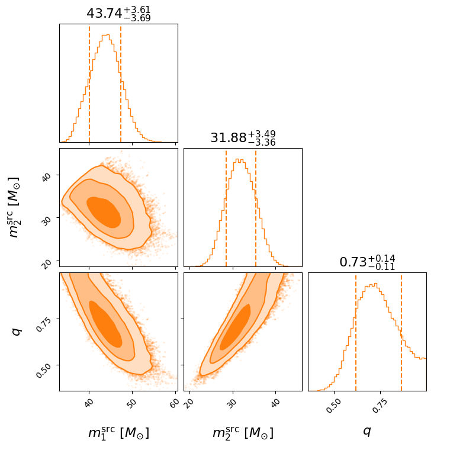
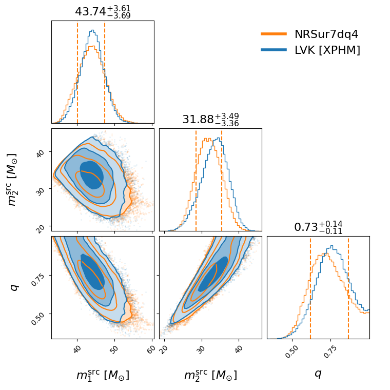
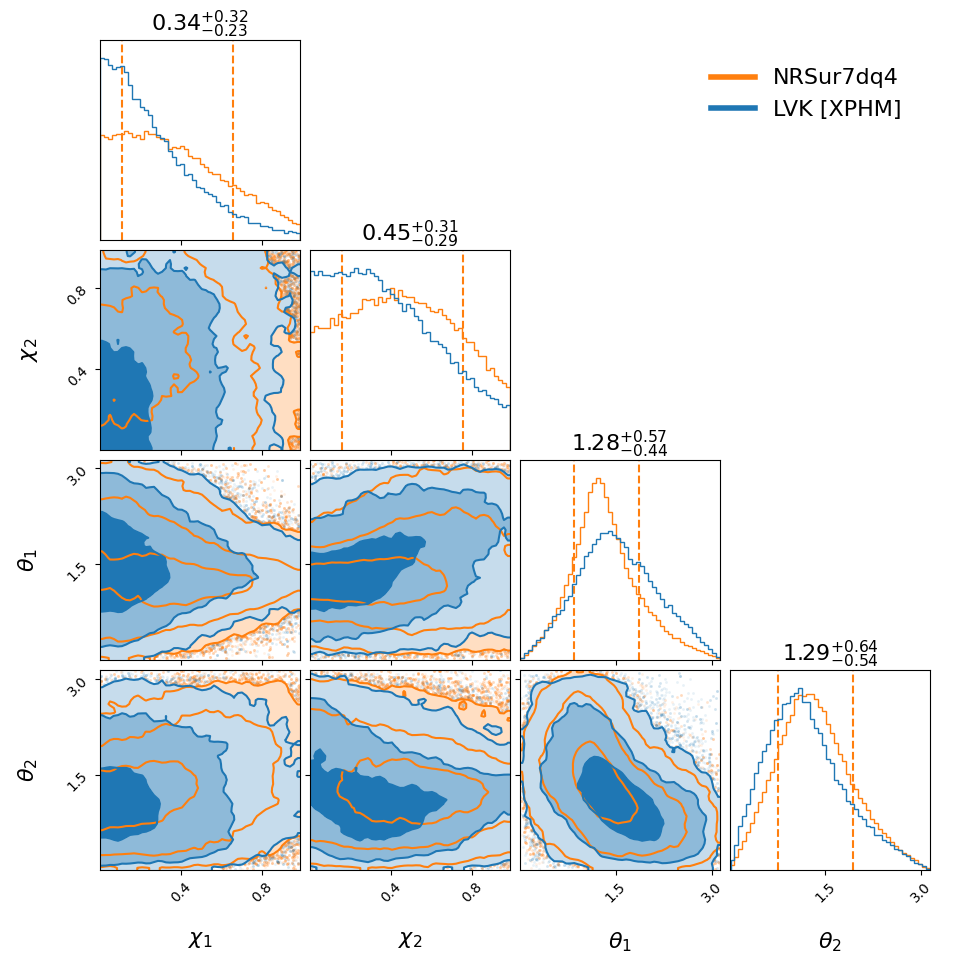
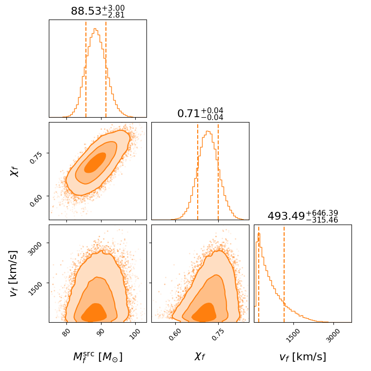
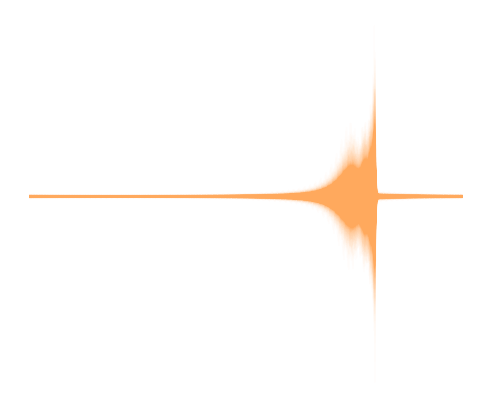

Show code cell content
import pip
try:
__import__("nrsur_catalog")
except ImportError:
pip.main(["install", "nrsur_catalog", "-q", ])
GW190521_074359#
Below are some plots for GW190521_074359 from the NRSurrogate Catalog.
from nrsur_catalog import NRsurResult
nrsur_result = NRsurResult.load("GW190521_074359", cache_dir=".nrsur_catalog_cache")
# you can specify a `cache_dir`: folder where data will be downloaded
Summary#
nrsur_result.summary()
Parameter |
Posterior 90% CI |
Prior |
|---|---|---|
\(m_1\ [M_{\odot}]\) |
\({53.85}_{-4.10}^{+4.06}\) |
\(-\) |
\(m_2\ [M_{\odot}]\) |
\({39.29}_{-3.98}^{+4.23}\) |
\(-\) |
\(\mathcal{M}\ [M_{\odot}]\) |
\({39.83}_{-1.55}^{+1.60}\) |
\(\text{UniformInComponentsChirpMass} [12, 400]\) |
\(q\) |
\({0.73}_{-0.11}^{+0.14}\) |
\(\text{UniformInComponentsMassRatio} [0.17, 1]\) |
\(a_1\) |
\({0.34}_{-0.23}^{+0.32}\) |
\(\text{Uniform} [0, 0.99]\) |
\(a_2\) |
\({0.45}_{-0.29}^{+0.31}\) |
\(\text{Uniform} [0, 0.99]\) |
\(\theta_1\) |
\({1.28}_{-0.44}^{+0.57}\) |
\(\text{Sine} [0, 3.14]\) |
\(\theta_2\) |
\({1.29}_{-0.54}^{+0.64}\) |
\(\text{Sine} [0, 3.14]\) |
\(\chi_{\mathrm{eff}}\) |
\({0.10}_{-0.08}^{+0.08}\) |
\(-\) |
\(\chi_{\mathrm{p}}\) |
\({0.41}_{-0.19}^{+0.23}\) |
\(-\) |
\(\alpha\) |
\({4.87}_{-0.44}^{+0.51}\) |
\(-\) |
\(\delta\) |
\({0.31}_{-0.51}^{+0.26}\) |
\(-\) |
\(t_c\ [s]\) |
\({1242459857.47}_{-0.00}^{+0.00}\) |
\(\text{Uniform} [1242459857.37, 1242459857.57]\) |
\(d_L\ [Mpc]\) |
\({1237.63}_{-313.66}^{+245.27}\) |
\(\text{UniformSourceFrame} [100.0, 10000.0]\) |
\(\phi\) |
\({2.86}_{-1.23}^{+1.16}\) |
\(\text{Uniform} [0, 6.28]\) |
\(\phi\) |
\({5.17}_{-0.79}^{+0.62}\) |
\(\text{Uniform} [0, 6.28]\) |
\(\theta\) |
\({2.10}_{-0.03}^{+0.03}\) |
\(\text{Sine} [0, 3.14]\) |
\(\psi\) |
\({1.46}_{-0.54}^{+0.55}\) |
\(\text{Uniform} [0, 3.14]\) |
\(\phi_{\mathrm{JL}}\) |
\({3.13}_{-2.13}^{+1.80}\) |
\(\text{Uniform} [0, 6.28]\) |
\(\phi_{12}\) |
\({3.45}_{-1.85}^{+1.56}\) |
\(\text{Uniform} [0, 6.28]\) |
\(\theta_{\mathrm{JN}}\) |
\({2.02}_{-1.57}^{+0.68}\) |
\(\text{Sine} [0, 3.14]\) |
\(m_f\ [M_{\odot}]\) |
\({88.53}_{-2.81}^{+3.00}\) |
\(-\) |
\(\chi_f\) |
\({0.71}_{-0.04}^{+0.04}\) |
\(-\) |
\(v_{\rm kick}\ [{\rm km/s}]\) |
\({493.49}_{-315.46}^{+646.39}\) |
\(-\) |
Lets make some plots!
Show code cell source
# NRSurrogate corner plots
import os
param_sets = dict(
mass=["mass_1", "mass_2", "chirp_mass", "mass_ratio"],
spin=["a_1", "a_2", "tilt_1", "tilt_2"],
effective_spin=["mass_ratio", "chi_eff", "chi_p"],
sky_localisation=["luminosity_distance", "ra", "dec"],
remnant=["final_mass", "final_spin", "final_kick"],
)
for name, params in param_sets.items():
fname = f"GW190521_074359_{name}_corner.png"
if not os.path.isfile(fname):
fig = nrsur_result.plot_corner(params)
fig.savefig(fname)
if name == "remnant":
continue
# LVK-Comparison plots
fname = f"GW190521_074359_compare_{name}_corner.png"
if not os.path.isfile(fname):
fig = nrsur_result.plot_lvk_comparison_corner(params)
fig.savefig(fname)
Corner Plots#
Mass#


Spin#

Effective Spin#
Sky-localisation#
Remnant#

Waveform posterior-predictive plot#
Show code cell source
fname = f"GW190521_074359_waveform.png"
if not os.path.isfile(fname):
fig = nrsur_result.plot_signal(outdir=".")

Animations#
Here are some animations of the posterior.
Spin |
|---|
Remnant |
|---|
Analysis configs#
Below are the configs used for the analysis of this job.
nrsur_result.print_configs()
Tmax: 10000
accounting: None
accounting_user: None
adapt: False
allow_tape: True
analysis_executable: None
analysis_executable_parser: None
autocorr_c: 5.0
autocorr_tol: 50.0
bilby_zero_likelihood_mode: False
burn_in_nact: 50.0
calibration_model: CubicSpline
calibration_prior_boundary: reflective
catch_waveform_errors: True
channel_dict: {H1:DCS-CALIB_STRAIN_CLEAN_SUB60HZ_C01, L1:DCS-CALIB_STRAIN_CLEAN_SUB60HZ_C01}
check_point_deltaT: 3600
clean: False
coherence_test: False
conda_env: None
condor_job_priority: 0
conversion_function: None
create_summary: True
data_dict: {H1:/anvil/projects/x-phy990007n/vvarma/Work/Projects/Current/NRSurCatalog/runs/GWTC/Data/GW190521_074359/H1_data.gwf, L1:/anvil/projects/x-phy990007n/vvarma/Work/Projects/Current/NRSurCatalog/runs/GWTC/Data/GW190521_074359/L1_data.gwf}
data_dump_file: None
data_format: None
default_prior: BBHPriorDict
deltaT: 0.2
desired_sites: None
detectors: ['H1', 'L1']
distance_marginalization: True
distance_marginalization_lookup_table: None
dlogz: 0.1
do_not_save_bounds_in_resume: False
duration: 4.0
dynesty_bound: multi
dynesty_sample: rwalk
email: None
enforce_signal_duration: False
enlarge: 1.5
existing_dir: None
extra_likelihood_kwargs: None
extra_lines: job-name=GW190521_074359 mail-user=sfield@umassd.edu mail-type=END
facc: 0.5
fast_mpi: False
final_result: True
final_result_nsamples: 20000
frac_threshold: 0.01
frequency_domain_source_model: lal_binary_black_hole
gaussian_noise: False
generation_function: None
generation_seed: None
gps_file: None
gps_tuple: None
idx: 0
ignore_gwpy_data_quality_check: True
ini: GW190521_074359_config.ini
injection: False
injection_dict: None
injection_file: None
injection_numbers: None
injection_waveform_approximant: None
injection_waveform_arguments: None
jitter_time: True
label: GW190521_074359_NRSur7dq4
likelihood_type: GravitationalWaveTransient
local: False
local_generation: False
local_plot: False
log_directory: None
max_iterations: 100000
max_its: 10000000000
max_run_time: 10000000000.0
maximum_frequency: 448.000000
maxmcmc: 5000
mem_per_cpu: None
min_eff: 10
min_tau: 30
minimum_frequency: {H1:20.000000, L1:20.000000, waveform: 0}
mode_array: None
mpi_timing: False
mpi_timing_interval: 0
n_check_point: 100
n_effective: inf
n_parallel: 4
n_simulation: 0
nact: 50
ncheck: 500
nestcheck: False
nfrac: 5
nlive: 2000
no_plot: False
nodes: 1
notification: Never
nsamples: 10000
ntasks_per_node: 128
ntemps: 20
numerical_relativity_file: None
nwalkers: 100
online_pe: False
osg: False
outdir: NRSur7dq4_run
overwrite_outdir: False
periodic_restart_time: 28800
phase_marginalization: False
plot_calibration: False
plot_corner: False
plot_data: True
plot_format: png
plot_injection: True
plot_marginal: False
plot_skymap: False
plot_spectrogram: True
plot_trace: True
plot_waveform: False
pn_amplitude_order: 0
pn_phase_order: -1
pn_spin_order: -1
pn_tidal_order: -1
post_trigger_duration: 2.0
postprocessing_arguments: None
postprocessing_executable: None
prior_dict: {mass-ratio: bilby.gw.prior.UniformInComponentsMassRatio(name='mass_ratio', minimum= 0.167 , maximum=1), chirp_mass = bilby.gw.prior.UniformInComponentsChirpMass(name='chirp_mass', minimum=12, maximum=400), total_mass = Constraint(name='total_mass', minimum=60, maximum=400), a_1 = Uniform(name='a_1', minimum=0, maximum=0.99), a_2 = Uniform(name='a_2', minimum=0, maximum=0.99), tilt_1 = Sine(name='tilt_1'), tilt_2 = Sine(name='tilt_2'), phi_12 = Uniform(name='phi_12', minimum=0, maximum=2 * np.pi, boundary='periodic'), phi_jl = Uniform(name='phi_jl', minimum=0, maximum=2 * np.pi, boundary='periodic'), dec = Cosine(name='dec'), ra = Uniform(name='ra', minimum=0, maximum=2 * np.pi, boundary='periodic'), theta_jn = Sine(name='theta_jn'), luminosity_distance = bilby.gw.prior.UniformSourceFrame(name='luminosity_distance', minimum=100.0, maximum=10000.0), psi = Uniform(name='psi', minimum=0, maximum=np.pi, boundary='periodic'), phase = Uniform(name='phase', minimum=0, maximum=2 * np.pi, boundary='periodic')}
prior_file: None
psd_dict: {H1:/anvil/projects/x-phy990007n/vvarma/Work/Projects/Current/NRSurCatalog/runs/GWTC/Data/GW190521_074359/H1_PSD.dat, L1:/anvil/projects/x-phy990007n/vvarma/Work/Projects/Current/NRSurCatalog/runs/GWTC/Data/GW190521_074359/L1_PSD.dat}
psd_fractional_overlap: 0.5
psd_length: 32
psd_maximum_duration: 1024
psd_method: median
psd_start_time: None
reference_frame: H1L1
reference_frequency: 20.0
request_cpus: 1
request_disk: 1.0
request_memory: 4.0
request_memory_generation: None
resampling_method: lal
result_format: hdf5
roq_folder: None
roq_scale_factor: 1
roq_weights: None
rotate_checkpoints: False
safety: 1.0
sampler: dynesty
sampler_kwargs: Default
sampling_frequency: 1024.0
sampling_seed: None
scheduler: condor
scheduler_analysis_time: 7-00:00:00
scheduler_args: None
scheduler_env: None
scheduler_module: None
single_postprocessing_arguments: None
single_postprocessing_executable: None
slurm_extra_lines: partition=wholenode account=phy990002
spline_calibration_amplitude_uncertainty_dict: None
spline_calibration_envelope_dict: {H1:/anvil/projects/x-phy990007n/vvarma/Work/Projects/Current/NRSurCatalog/runs/GWTC/Data/GW190521_074359/H1_CalEnv.dat, L1:/anvil/projects/x-phy990007n/vvarma/Work/Projects/Current/NRSurCatalog/runs/GWTC/Data/GW190521_074359/L1_CalEnv.dat}
spline_calibration_nodes: 10
spline_calibration_phase_uncertainty_dict: None
submit: True
summarypages_arguments: {'nsamples_for_skymap': 5000, 'multi_process':8}
thin_by_nact: 1.0
time: 42:00:00
time_marginalization: False
time_reference: geocent
timeslide_dict: None
timeslide_file: None
transfer_files: True
trigger_time: 1242459857.466309
tukey_roll_off: 0.4
verbose: False
vol_check: 8
vol_dec: 0.5
walks: 100
waveform_approximant: NRSur7dq4
waveform_arguments_dict: None
waveform_generator: bilby.gw.waveform_generator.WaveformGenerator
webdir: summary
weight_file: None
zero_noise: False
If you used this data, please cite this work.
Comments#
Leave a comment below or in this issue.